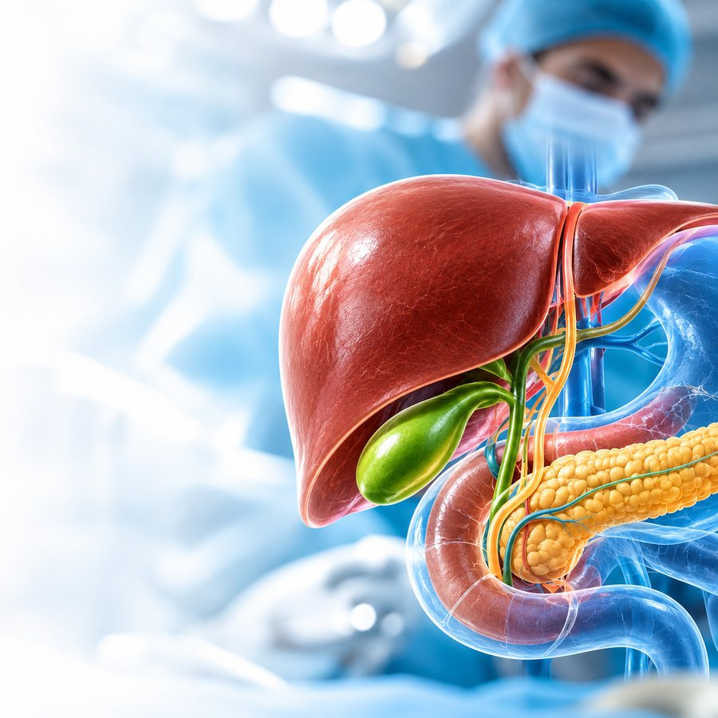
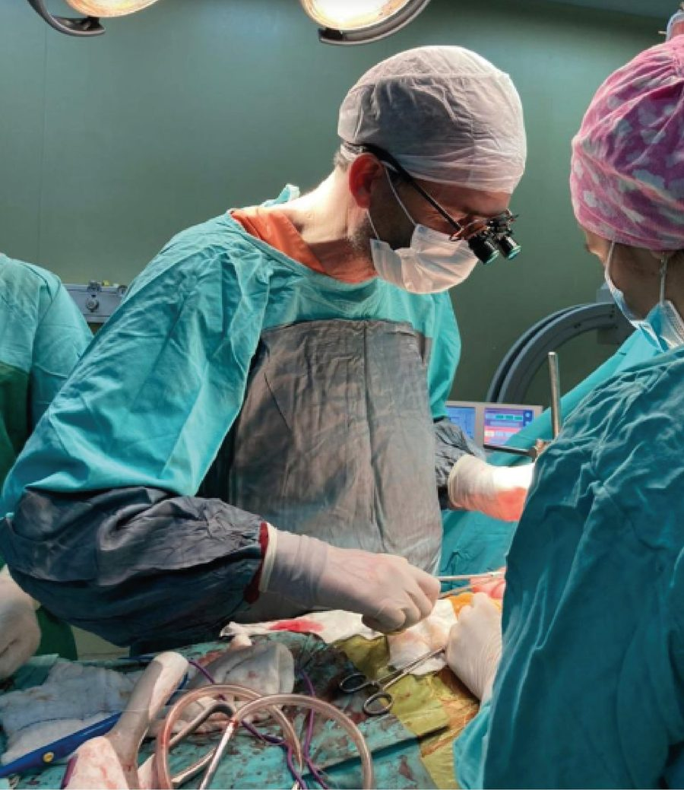
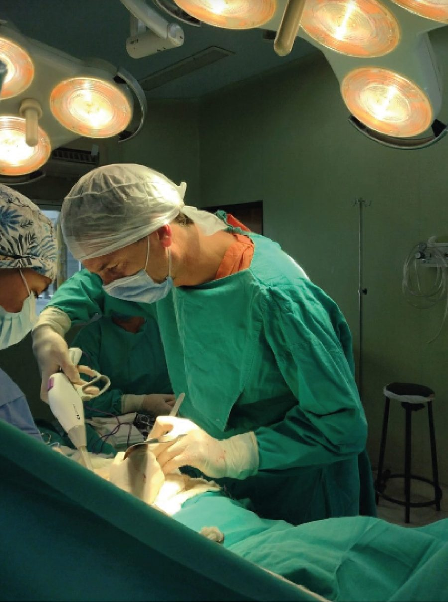
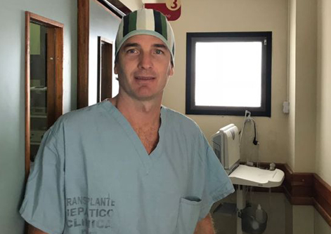

Cirugía Hepatobiliopancreática
Tumores de hígado, vía biliar y páncreas. Litiasis vesicular y coledociana de resolución compleja.
Cirujano · Santa Fe, Argentina
Más de 25 años de ejercicio profesional, con formación de posgrado en París y Montpellier. Jefe de la Unidad de Hígado y Trasplante Hepático del Grupo MIT y de la Sección de Cirugía Hepatobiliopancreática del Hospital J. B. Iturraspe.
Formación nacional e internacional
Argentina
Francia · Especialización
25+
Años de ejercicio
profesional.
2000+
Cirugías hepatobiliopancreáticas complejas.
120+
Operativos de trasplante
hepático.
150+
Trabajos presentados y publicados en congresos y revistas.
Diagnóstico, cirugía y seguimiento de patologías del aparato digestivo, con foco en los casos de alta complejidad.
También realiza Cirugía General


Cargos asistenciales, de gestión y docencia vigentes.

Grupo MIT · Santa Fe
Medicina Interdisciplinaria y Trasplantes
Hospital J. B. Iturraspe · Santa Fe
Hospital público
Grupo Oroño · Rosario
Sanatorio Parque
Docencia
Universidad y sociedades científicas
Formación
Santafesino de nacimiento, eligió volver a su ciudad para poner al servicio de sus pacientes
todo lo aprendido en Argentina y Francia.
Formación de base
1999
Médico
Universidad Nacional de Rosario.
2000–2004
Residencia y Jefatura de Residentes
Hospital Privado de Comunidad, Mar del Plata.
2004
Especialista en Cirugía General
Título universitario, UNLP.
Alta especialización en cirugía hepática
2005
Fellow en Cirugía Videolaparoscópica y Robótica
Institut Mutualiste Montsouris, París.
2006
Fellow en Cirugía HBP y Trasplante Hepático
Hôpital Saint-Éloi, Montpellier.
2007
Fellow en Cirugía Hepatobiliar y Trasplante Hepático
Hôpital Paul Brousse, París.
2007
AFS en Chirurgie Générale
Université Montpellier I.
Cirugía robótica
2026
Entrenamiento en Cirugía General Robótica, plataforma Da Vinci Xi
Programa Robótico Nacional Intuitive.
Su equipo
Desde 1978, referentes en la región por su calidad profesional y tecnología médica de avanzada. El Dr. Pierini es jefe del Servicio de Cirugía General y de la Unidad de Hígado y Trasplante Hepático.
Investigación y referencia
Investigación clínica internacional, conducción de sociedades científicas y participación en los consensos que definen cómo se trata hoy la patología hepatobiliopancreática.
Ensayo clínico internacional · 2026
Solución salina versus Ringer lactato en la reanimación de la pancreatitis aguda. Es el ensayo clínico internacional con mayor número de participantes realizado hasta hoy en pancreatitis aguda.
800
pacientes con pancreatitis aguda incluidos en el estudio
DDW 2026
entre los trabajos destacados
Coautor por la Sección de Cirugía HPB del Hospital J. B. Iturraspe, junto a centros internacionales. Resultados en proceso de publicación en JAMA.
Un excelente cirujano, muy apreciado por quienes trabajen con él.
Reconocimientos
Premio al mejor caso clínico 2025
Academia Argentina de Cirugía.
Santafesino Destacado
Honorable Concejo Municipal de Santa Fe.
Reconocimiento del Senado
Cámara de Senadores de la Provincia de Santa Fe.
25 años de ejercicio profesional
Colegio de Médicos de la Provincia de Santa Fe.
Los turnos se gestionan por WhatsApp con cada institución.
Av. Freyre 3074, Santa Fe
Turnos: (+54 342) 453 7262
San Jerónimo 3299, Santa Fe
Turnos (solo viernes): (+54 342) 438-6203
Para consultas académicas, institucionales o de prensa. Completá los datos y el mensaje se envía por WhatsApp.
Este canal no reemplaza una consulta médica. Ante una urgencia, acudí a la guardia más cercana.